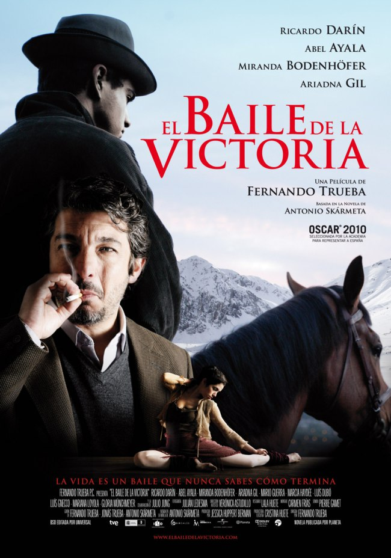
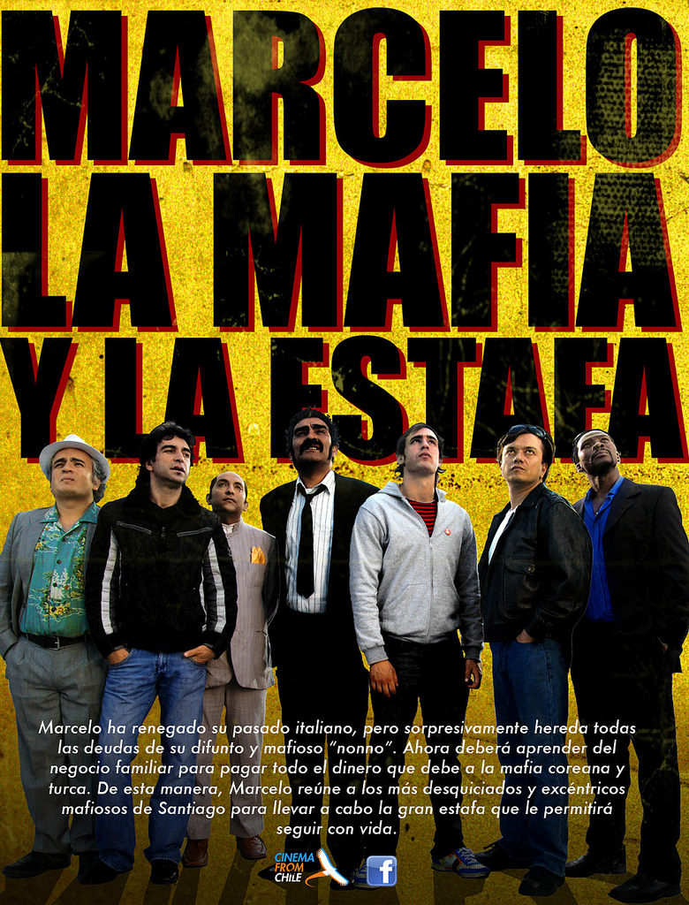
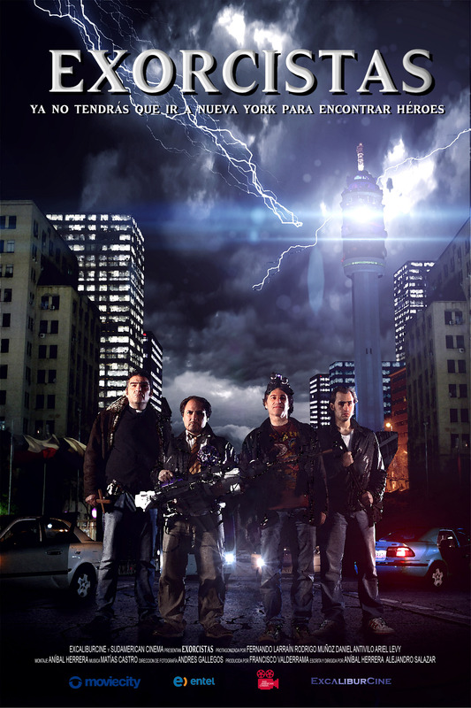

- Mezclas Stéreo 2.0
- Mezclas Surround 5.1.
- Grabación de Doblajes.
- Folleys.
- Pull up de audio para DCP de 23.97 a 24 frames reales.
- Masterizaciones para distintos formatos.
El Baile de la Victoria

Asistente de Sonido Directo (cañista) para Pierre Gamett en “El Baile de la Victoria” (agosto, septiembre, octubre 2008) (Dir. Fernando Trueba)
Nominada a mejor sonido en los Goya y a representar a España en los premios Oscar 2010.
Marcelo la Mafia y la Estafa

(No responsable del sonido de la versión Stereo 2.0 analógica en 35mm realizada en México)
- Sonido directo Largometraje “Marcelo la Mafia y la Estafa” (Dir. Aníbal Herrera / Alejandro Salazar) (julio, agosto, septiembre 2009)
- Post Producción Sonora 5.1 (Trailer) “Marcelo la Mafia y la Estafa” (Dir. Aníbal Herrera / Alejandro Salazar) (julio 2012)
- Post Producción Sonora 5.1 (Trailer) “Marcelo la Mafia y la Estafa” version DSP (Dir. Aníbal Herrera / Alejandro Salazar) (julio 2012)
- Post Producción Sonora 5.1 (Largometraje) version para DSP (cine digital) “Marcelo la Mafia y la Estafa” (Dir. Aníbal Herrera / Alejandro Salazar) (septiembre 2012)
Mejor Estar Solo
Sonido directo Largometraje “Mejor Estar Solo” (Dir. Rodrigo Gonzalez) (junio 2012))
Exorcistas

Sonido directo y Post Producción Sonora trailer “Exorcistas”
(Dir. Aníbal Herrera y Alejandro Salazar) (mayo 2011)
- - Sonido directo y registro de foleys y pre mezcla (2.0 stereo) Cortometraje “Antes de apagar la luz” (Dir. Francisca Olaeta) Post producido en Dolby 5.1 Chile Films (cinecolor) (2009)
- Post Producción Sonora trailer “Casting” (Dir. Francisca Olaeta) (2010)
- - Sonido directo Cortometraje “El Comienzo de las Cosas” (Dir. Vicente Fernández) (abril 2010)
- - Sonido directo Cortometraje “Sobre la Mesa” (Dir. Francisca Alegría) (junio 2010) Seleccionado para FIC Valdivia 2010 en el área de Cortos Internacionales. (error en la subida después del min 6)
- - Sonido directo y Post Producción Sonora cortometraje“La Santa” ((Dir. Mauricio Lopez) (Octubre 2010 ) seleccionado Festival de Berlín 2011, SANFIC Santiago de chile 2012
- - Post Producción Sonora cortometraje “Martes” (Dir. Augusto Matte/Sofía Subercaseux) (diciembre 2010) SANFIC chile 2011
- - Post Producción Sonora cortometraje “Invernadero” (Dir. Natalia Luque / Jacinta Izquierdo) (diciembre 2011)
- - Sonido directo trailer “Valle Negro” (Dir. Sebastián Rivera) (mayo 2012)
- - Post Producción Sonora cortometraje “Levantar” (Dir. Georgina Pérez) (julio 2012)
- - Post Producción Sonora Documental “Forza Vocale” (Dir. Mayra). (noviembre 2010)
- - Post Producción Sonora Spot Mall Portal centro Talca
- - Sonido directo Comercial Plebiscito Ciudadano (Dir. Sebastián Fernández) Digital HD 2011
- - Post Producción Sonora teaser “La Visita” Presentado en festival Montreal 2013